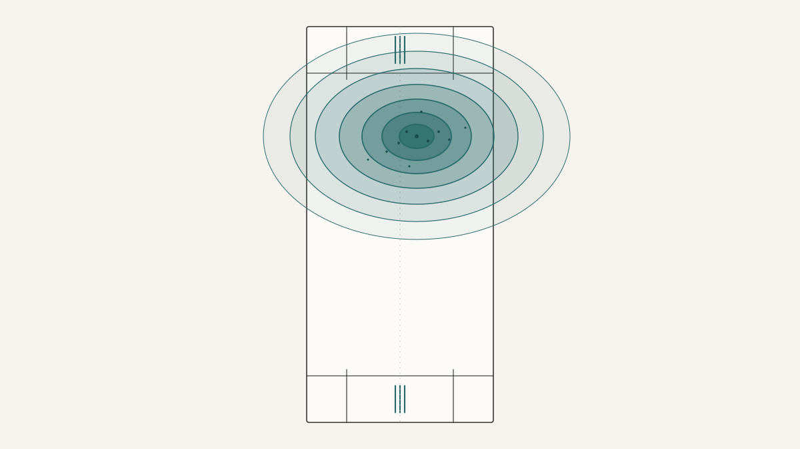
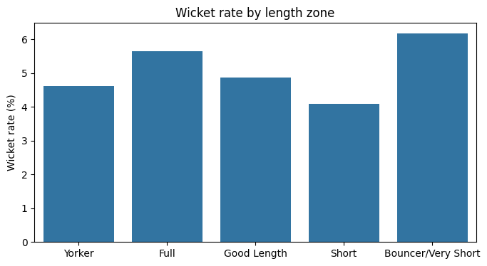
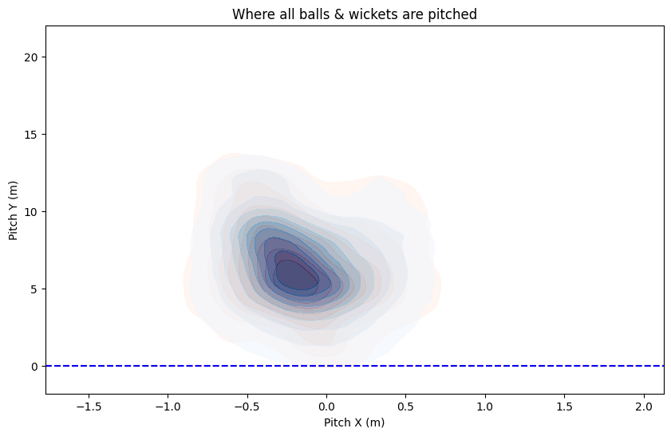
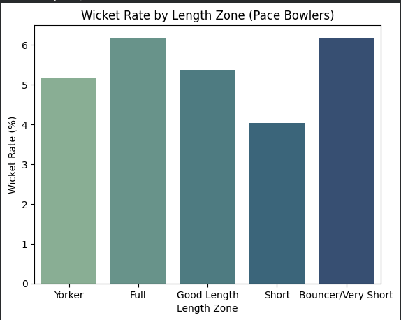
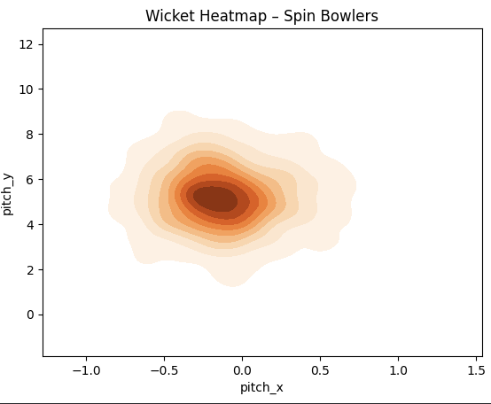
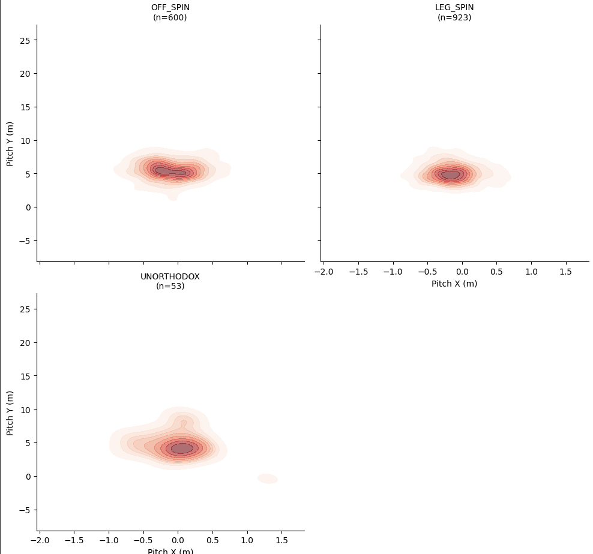
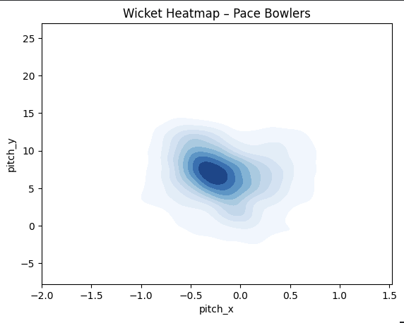

There is a sentence that every cricket coach says at least once a week, usually with the same hand gesture: pitch it up on a good length, just outside off stump, and the wickets will come. It is the closest thing cricket has to a folk theorem. The sentence is old enough and confident enough that it mostly goes uninspected. The question I wanted to ask — with a friend who spent the summer cleaning up an IPL ball-tracking dataset — was whether the sentence actually survives contact with ball-level data. The answer turned out to be mostly yes, with one uncomfortable exception that still bothers me.
The dataset is a Hawkeye feed from IPL men's matches, one row per legal delivery, and the columns that mattered for this first pass were small and well-defined. Two of them carry almost all the geometric information: pitch_x is the lateral distance in metres from middle stump at the point where the ball bounces (negative is leg side, positive is off side), and pitch_y is the distance along the pitch from the stumps to where the ball lands. A third column, dismissal_details, is either null or carries a short text describing a wicket, and that was enough to construct a binary is_wicket label. After dropping rows with implausible pitch coordinates (\(|\mathrm{pitch\_x}| > 2\) m or pitch_y outside \([0, 22]\) m — almost certainly sensor glitches) and filtering out sub-10 km/h ball speeds for the speed plots, the working frame held roughly 140,000 deliveries. That is a large enough sample to look at fine slices without the standard errors swallowing the result.
The first question to press on was the easy one: where, on the two-dimensional \((\mathrm{pitch\_x}, \mathrm{pitch\_y})\) plane, do wickets actually happen relative to where the ball is usually pitched? The coaching claim is specifically relative. Bowlers target the good-length off-stump channel heavily; the question is whether that region has an elevated wicket rate, or whether wickets are just mechanically dense there because the pitch count is dense there.
Before looking at the heatmap, it helps to have a shared picture of the zones coaches actually use. The ball's length — its pitch_y — gets carved into five discrete bands that every commentator falls back on, and they are not distributed uniformly: Yorker territory is a narrow sliver right at the stumps, Good Length is the disputed region, and "Bouncer or Very Short" is a huge tail that stretches to the far end of the pitch.
The five length zones as they actually map to the pitch. The "Bouncer or Very Short" band is much larger than it looks when coaches draw it — anything more than ten metres from the stumps falls into one category, which is already enough to make one suspicious of any effect measured from it.
With that picture held in mind, the overall spatial distribution looks exactly like the coaching story would predict.

Two-dimensional KDE overlay on the \((\mathrm{pitch\_x}, \mathrm{pitch\_y})\) plane. The bulk of all deliveries sit in a channel just outside off stump between about five and eight metres, which is the textbook "good length" region. The wicket-only density sits on the same channel but slightly fuller — closer to the batter — and a bit tighter laterally. The coaching sentence survives the first look.
The one-dimensional projections make the contraction easier to see, because you can watch the wicket curve visibly crowd inward relative to the non-wicket one on both axes.

Marginal density of pitch_y (length) split by whether the ball was a wicket. Non-wicket deliveries spread broadly from roughly four to ten metres; wicket deliveries pile up in a narrower band between about 4.5 and 7 m, and the wicket mode sits slightly fuller than the non-wicket mode. The lateral axis tells the same story but more gently — wickets concentrate closer to the stump line than the average delivery does.
So far the story is a tidy vindication of the folk theorem. But the moment you collapse the plane into bar chart form, something misbehaves.

Wicket rate — fraction of deliveries in each zone that produced a dismissal — across the five length zones, pooled across all bowlers and all match phases. Full and Good Length sit where one would expect, around five to six per cent. Yorkers are a hair behind. Short is the weakest. And then Bouncer / Very Short, at roughly six per cent, is competitive with the best zone on the chart.
The Bouncer bar is the result that wouldn't sit still. Taken at face value, it looks as though hurling the ball halfway down the pitch is, on average, about as effective a wicket-taking tactic as pitching it on a nagging length just outside off. That is not a conclusion anyone who has watched cricket would accept. It is worth pausing on why the result is almost certainly wrong before deciding what to do about it, because the answer turns out to be a useful lesson about how much damage a single pooled axis can do.
Two things are happening at once, and they both inflate that bar. The first is phase mixing. Death-overs bowling is tactically very different from powerplay bowling, and short-pitched deliveries in the final two overs are a high-wicket event — they are being used into set fields with deep fine leg and deep square leg explicitly to convert a mistimed hook or pull into a catch. Pooling those overs together with the middle-overs short balls, which are defensive, artificially shifts the rate upward. The second is the zone definition itself. The "Bouncer or Very Short" label runs from 10 m all the way to 22 m. That is more than half the pitch. Any full toss that skewed past 10 m (there are surprisingly many in the filtered data) goes into the same bucket as a genuine chest-high bouncer. The bucket is too generous, and generous buckets look more effective than they are because they absorb rare but high-wicket deliveries at both ends of the range.
The correct response to the misbehaving bar is not to throw out the finding. It is to stratify — to re-compute the wicket rate separately by bowling style, or separately by match phase, and see whether the Bouncer anomaly survives the split. And when you do that, the story becomes legible in a way that the pooled chart obscured.

The same bar chart restricted to pace bowlers. Full is still at the top. Bouncer is still elevated but no longer competitive with Good Length in the way the pooled version made it look. The pattern that survives the restriction — Full and Good Length as the reliable wicket-takers, Short as the weakest, Yorker as tactically important — is much closer to the coaching picture. The anomaly was a pooling artifact.
Splitting by bowling style sharpens the picture further. Spin and pace are not merely two versions of the same process. They generate wickets through geometrically different mechanisms, and the heatmaps make that visible without any further modelling.

Wicket-density heatmaps for pace (left) and spin (right). Pace wickets spread out along the off-stump corridor, with the mode sitting around \(\mathrm{pitch\_x} \approx -0.4\) m and \(\mathrm{pitch\_y}\) between six and eight metres, and the distribution tailing meaningfully into shorter lengths. Spin wickets form a much tighter, more central cluster — almost on the line of the stumps, shorter lengths between four and six metres. The two styles are producing wickets out of different regions, and the pooled story misses this entirely.
There is a second, related finding that seems worth flagging. For seam bowlers specifically, ball speed carries almost no independent signal about wicket probability.

KDE of ball speed for seam bowlers, split on is_wicket. The wicket and non-wicket curves overlap almost completely through the bulk of the professional speed range. Whatever is making a delivery a wicket ball, it is not pace by itself. (The small cluster at near-zero is sensor noise that survived the filter and should be ignored.)
Here is the overall shape of the thing. The "good length just outside off" rule of thumb survives, descriptively: when you look at where wickets actually happen relative to where the ball gets pitched, that region really is doing disproportionate work. But any version of the analysis that reports a single pooled wicket rate per zone will also hand you the Bouncer anomaly, and that anomaly will make you believe something about bouncers that is mostly the fault of how the zones were drawn and how the phases were averaged. The finding and the artifact travel together in the same table, and the only way to separate them is to stratify until the artifact dissolves.
The one thing that needs restating before any of this is used in an actual coaching conversation is that it is all observational. Bowlers do not deliver uniformly across the \((\mathrm{pitch\_x}, \mathrm{pitch\_y})\) plane — they target the "good length outside off" region precisely because they already believe it is effective, which means the high wicket rate in that region is partly a selection effect and partly a real property of the region. The present analysis cannot separate the two. A rigorous causal version of the same question would need to condition on bowler identity, batter handedness, phase, and the field setting, and would probably need a matched-comparison design between balls that were intended for a given zone and balls that actually landed in it. None of that is in this first pass. What this pass does well is describe the joint distribution clearly enough that the next pass knows where to push.